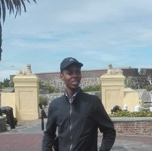

Historical Place in Cape Town
Church Square

Church Square owes its existence to its location in front of The Groote Kerk, the foundations of which were laid by Governor Willem Adriaan van der Stel in 1700. The square wasn’t officially named Church Square until 1791 when it was referred to it as “Kerkplijn”.
District six

District Six was named the Sixth Municipal District of Cape Town in 1867. It was established as a mixed community of freed slaves, merchants, artisans, labourers and immigrants, District Six was a vibrant centre with close links to the city and the port. By the beginning of the twentieth century.
Castle
The Castle of Good Hope is the oldest surviving building in South Africa and has been the centre of civilian political and military life in the Cape since 1666. The Castle is currently undergoing renovation – for the first time in 20 years